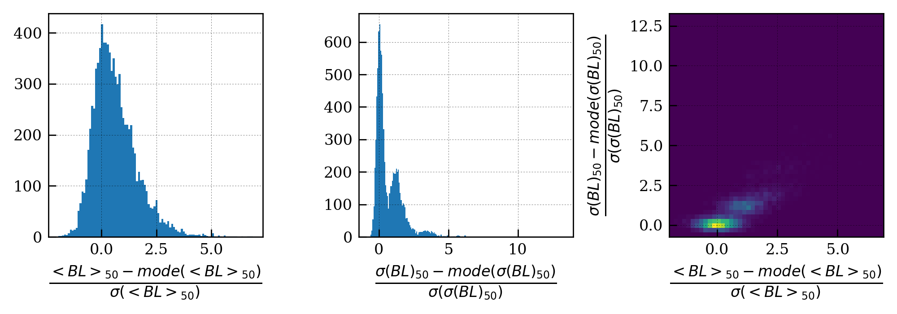
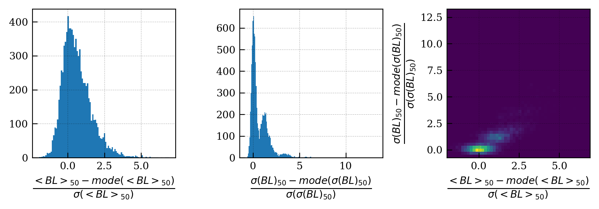

Baseline parameters extraction¶
The aim of this analysis is to give for a given pixel, the baseline parameters such that it can be decided in subsequent analysis whether or not the baseline computed by averaging the first N samples of an event can be used to subtract the baseline in this event or if it contained too much fluctuation. The condition is
\[\frac{\sigma(BL_{N})_{i}-<\sigma(BL_{N})>}{\sigma(\sigma(BL_{N}))}<0.5\]
Expected input data¶
Any runs containing no signal between sample 0 and sample N
Output data¶
- histogram.Histogram with data size (2,n_pixels,n_events):
- [0] correspond to the mean of the baseline over N samples
- [1] correspond to the std deviation of the baseline over N samples
fit_resultis of size (n_pixels,4):- [0] contains the modes of data[0]
- [1] contains the stddev of data[0]
- [2] contains the modes of data[1]
- [3] contains the stddev of data[1]
Step 0: Configuration¶
Non standard configurations which are required to run this analysis:
baseline_per_event_limit: integer that specifies the number of samples N to take into account to compute the baseline
Step 1: Histogram building¶
The histogram building phase uses the module data_treatement.adc_hist
with h_type='MEANRMS'
Step 2: Analysis¶
The analysis computes the modes and standard deviation of the baseline mean and standard deviation over N samples of all the events
Step 3: Display¶
 
